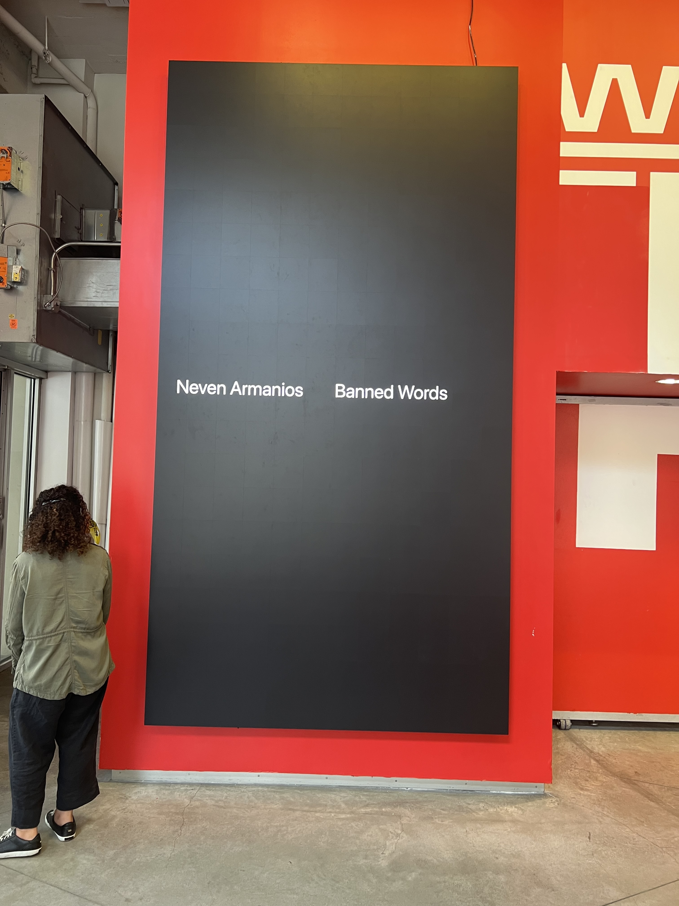
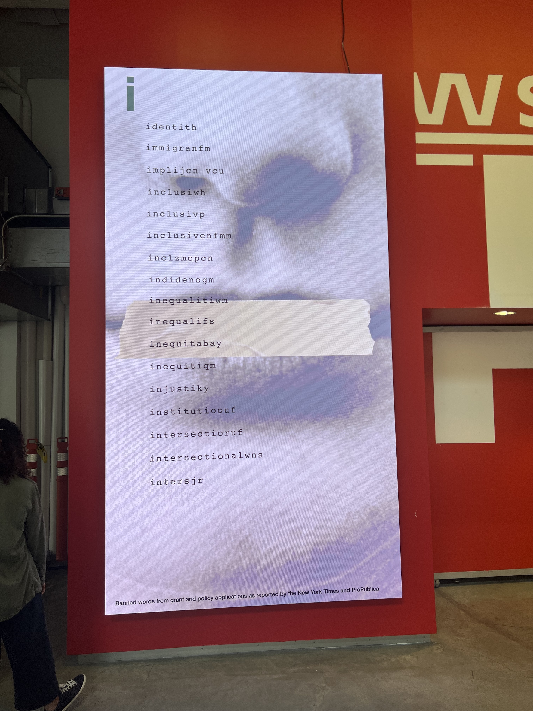

Data Visualization · Public Installation
Banned Words
Designer & Developer · Parsons Digital Fellowship Award · Installation: 5th Avenue, NYC through Summer 2027
Overview
Visualizing the erasure of language from government websites
Banned Words is an interactive data visualization—both a physical public installation and a web experience—that makes visible the systematic scrubbing of language from federal agency websites and official documents. As documented by the New York Times in March 2025, federal agencies removed words like "diversity," "equity," "inclusion," and "climate" from their websites, mission statements, and public-facing materials. The project transforms this digital erasure into physical and digital experiences: words floating, accumulating, and disappearing in real time to reveal the scale and pattern of what language has been systematically removed from how government presents itself to the public.
Interactive Website
Explore the data online
The project lives as an interactive website that allows anyone to explore the data behind the language removal. The site visualizes which words were removed, and reveals patterns in how federal language was systematically scrubbed from government websites. Typography animates to show the clustering of removed terms, making the invisible erasure visible and explorable. The site also includes interactive word games that play with language itself, highlighting the absurdity of banning specific words and the arbitrary nature of what language governments deem acceptable or unacceptable.
Interactive visualization exploring language removal across federal agencies · Open full site ↗
Physical Installation
Bringing the data into public space
Interactive installation on 5th Avenue, New York City
Parsons Fellowship Award
Recognition for data visualization and public engagement
This project was awarded The Digital Fellowship Award from Parsons School of Design in 2026 in recognition of its contribution to data visualization as a tool for civic engagement and social awareness. The fellowship supported the development and public installation of the work, enabling it to reach audiences beyond academic and design communities.
5th Avenue Installation
On display through Summer 2027
The physical installation is currently on display on 5th Avenue in New York City, where it will remain through the summer of 2027. Located in one of the most visible public spaces in the city, the project engages thousands of daily passersby with questions they might otherwise not encounter: what does it mean when government agencies systematically remove language from their websites? When words like "diversity," "equity," "inclusion," and "climate" disappear from agency mission statements and official pages? What happens to public discourse when the government edits its own vocabulary?
Approach
Data as physical experience
Rather than presenting website scrubbing as abstract policy, this project materializes the data drawn from the New York Times investigation into federal agencies' removal of language. Each removed word appears on screen as a visual element—typography scaled to reflect and emphasize clustering and repetition. The installation makes the invisible visible: patterns of language removal, recurring targets like DEI-related terms and climate vocabulary, and the cumulative effect of erasing these words from government websites, mission statements, and public-facing documents.


Installation views on 5th Avenue showing public engagement with the visualization
Impact
Bringing digital erasure into public view
By placing this work in a high-traffic public space, the project reaches audiences who might not follow changes to government websites or read detailed investigative reporting. The installation doesn't argue—it shows. It gives form to the digital scrubbing of language from federal agency websites that happens quietly, without announcement, making the scale and pattern of what has been removed from public-facing government materials undeniable and immediate.
Based on reporting by the New York Times: Federal Agencies Remove Words on Diversity, Equity and Climate